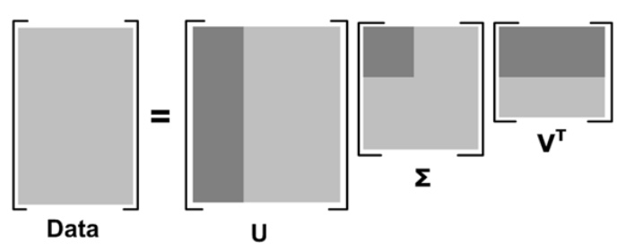

推荐系统沉思录
推荐系统也是我比较感兴趣并且最近一年一直在研究的方向，搜索可以看做是上一个时代的钥匙，但是在信息爆炸的今天，推荐是现在的钥匙。
推荐算法五花八门，但是其实各有各的局限，比较常用的有：
- 基于内容推荐
- 协同过滤推荐
- 基于关联规则推荐
- 基于效用推荐
- 基于知识推荐
- 组合推荐
推荐算法本身是一个综合性的问题，他说浅他可以做的很浅，说深也可以把他做到很深。你可以简单地用最基本的Content-based，再复杂点可以Collaborative Filtering，如果你想做的深入一些，基于SVD/LDA等的降维算法，基于SVD++等的评分预测算法，基于Learning To Rank的排序算法，甚至你再转换问题，把推荐问题再转换成分类问题，或者采用以上算法前先用各种聚类算法做数据的预处理，你可以折腾出很多很多的花样。所以做推荐领域的工程师是个很“痛苦”的事儿，因为只要机器学习领域有任何的突破性进展，你都需要去做跟踪，NLP领域出了Word2Vec，出了GloVe，其他领域的算法工程师可以说我对NLP不感兴趣，但是你必须跟踪，因为他可以辅助你去做文本内容类的推荐算法；Deep Learning可以让图像识别领域做更棒的特征工程，你也马上要去跟踪学习，因为在做图片推荐时终于有一种方式也许能解决元信息问题；RecSys2013的best paper通过调整节点顺序从而优化矩阵分块策略，极大改善了矩阵分解算法的效率，你就要去跟踪来更新自己的旧有离线算法；微软亚研搞出了一个Light LDA允许在低网络流量下去做LDA的多机并行，你就要兴冲冲地跑过去读他们啰啰嗦嗦的几十页的paper，因为终于不用忍受LDA低劣的性能了，而这些追踪往往是无穷无尽的。但是如果你一旦停止了更新知识库，就会学术界远远甩在身后，做一个“协同过滤”工程师。
但是算法的一切调整只有寄托于产品才能发挥出其最大的威力，但是如何根据产品去选择和调整算法是我认识大多数的算法工程师所非常薄弱的一点。举个实际的例子，我们都知道在所有的比赛中，多种算法的混合是最重要的环节，经常就会有人问我，说哪种混合策略是最好的，但是其实这是严重依赖于产品本身的。例如Tinder，他们的产品形态是每次只出现一个人，让你点击喜欢还是不喜欢，那么这种情况你必须需要一个算法的分类器来为每个用户选择一个合适的推荐算法，并且根据用户的反馈来实时调整分类器，因为如果用户连续Unlike了几个用户，他可能就流失掉了。但是对于LinkedIn的用户推荐列表中，你很适合用若干算法混合的算法，因为这样可以保证至少让整个列表中至少有X个所感兴趣的用户，而往往同一个推荐算法的Items是趋同的。再对于展示在首页的推荐入口区域，可以优先选择若干推荐算法的交集策略，这样可以用少量的高质量Item最大化的满足用户的心理底线，从而吸引用户点击。所以认清产品的形态和交互形式，依据产品去订制算法是成为优秀算法工程师，而非算法研究员的重要一点。
数据工程师不仅仅是处理数据而是理解数据。我遇到的数据工程师大抵分成两类，一类是数据开发工程师，例如Hadoop工程师，数据仓库工程师；一类是学术化的工程师，深钻模型，这种工程师其实还是更适合研究院；当然，这两种工程师都各有优缺点，但是我更觉得对于大部分企业来说更需要一个理解数据而非处理数据的工程师，核心价值更应该在于深入去理解产品业务，数据处理，数据建模，做数据分析和挖掘，接下来对于产品的发展做数据化的驱动，并且知道何时应该继续对模型进行优化，何时应该适可而止。
沿着上一点继续说，Growth Hacker & Data Scientist。一个优秀的算法/数据工程师应该具备Growth Hacker 和 Data Scientist的能力，其实这两点也恰恰标志着不仅仅是数据，而是一个产品的最重要两点：增长和留存。作为Growth Hacker，你应该为企业找到潜在的机会点，帮助产品增长；另一方面，你也应该作为Data Scientist，发现现有数据的问题，帮助产品优化体验，提升留存，而推荐系统往往是属于这一部分的子集。
数据驱动是什么？数据驱动是从已有的数据中去发现规律对产品进行优化，但是数据做不到的是从未知中挖掘机会点，而这往往是一个优秀产品经理的直觉。我经常和人举的一个例子是，要是数据驱动，也许今天应该也出现不了微信。很多时候优秀的创意就是来源于一个直觉，而不是循规蹈矩的分析推导，因为这样往往会陷入我在上文提到的大数据的窘境。所以不要无视数据，更不要神化数据，该相信直觉的时候还是相信直觉。其实有时候做算法也是一样，你不可能把上千种算法都A-B Test一次，有时候别人问我为什么，我能说的也就是直觉，作为算法工程师的直觉，“用另外一种算法效果不会更好的”。
主要推荐方法的对比
| 推荐方法 | 优点 | 缺点 |
|---|---|---|
| 基于内容推荐 | 推荐结果直观，容易解释；不需要领域知识 | 稀疏问题；新用户问题；复杂属性不好处理；要有足够数据构造分类器 |
| 协同过滤推荐 | 新异兴趣发现、不需要领域知识；随着时间推移性能提高；推荐个性化、自动化程度高；能处理复杂的非结构化对象 | 稀疏问题；可扩展性问题；新用户问题；质量取决于历史数据集；系统开始时推荐质量差； |
| 基于规则推荐 | 能发现新兴趣点；不要领域知识 | 规则抽取难、耗时；产品名同义性问题；个性化程度低； |
| 基于效用推荐 | 无冷开始和稀疏问题；对用户偏好变化敏感；能考虑非产品特性 | 用户必须输入效用函数；推荐是静态的，灵活性差；属性重叠问题； |
| 基于知识推荐 | 能把用户需求映射到产品上；能考虑非产品属性 | 知识难获得；推荐是静态的 |
冷启动问题
- 用户冷启动
- 提供 热门排行榜/热销榜/热搜榜，引导用户
- 利用客户提交的年龄，性别做粗粒度的个性化
- 物品冷启动
- 精准推荐/模糊推荐
- 推荐给喜欢该商品的用户/商品相似度的用户
- 精准推荐/模糊推荐
- 提供非个性化的推荐
- 利用社交网站授权，导入好友关系，给用户推荐好友喜欢的物品
- 登录时根据用户的反馈，收集用户兴趣，给用户推荐和反馈的相似的物品（ItemCF）
- 利用用户注册信息
- 人口统计学信息（年龄/性别/职业/学历/居住地）
- 用户兴趣的描述
- 导入站外行为数据（社交网络的数据）
- 流程
- 获取用户注册信息
- 将注册的用户分类
- 给用户推荐所属分类中用户喜欢的物品
- 选择合适的物品启动用户兴趣
- 热门
- 具有代表性和区分性 电影：卖票并且受欢迎的
- 启动物品集合需要多样性 Nadav Golbandi
- 利用物品的内容信息
- 关键词向量（文本-分词-实体检测-关键词排名-关键词向量）
- 发挥专家的作用
- Pandora（个性化电台）组织专家项目组，对歌曲维度进行标注
- Jinni（电影基因系统）
- 半人工-专家总结电影基因，创建基因库
- 半自动-文本分析
AB 测试
产品的改变并不总是意味着进步，有时候无法评判多种设计方案中哪一种更优秀的， 这时A/B test就派上用场了，A/B test可以回答两个问题：
- 哪个方案好
- 结果的可信程度
A/B test结果是基于用户得到的结果，用数据说话， 而不是凭空想象去为用户代言，并且通过一定的数学分析给出结果的可信度。
A/B test需要如下几个前提：
- 多个方案并行测试；
- 每个方案只有一个变量不同（当然，这太严格了）；
- 能够以某种规则优胜劣汰
其中第2点暗示了A/B测试的应用范围：A/B测试必须是单变量，但有的时候，我们并不追求知道某个细节对方案的影响，而只想知道方案的整体效果如何，那么可以适当增加变量，当然测试方案有非常大的差异时一般不太适合做A/B测试，因为它们的 变量太多了，变量之间会有很多的干扰，所以很难通过A/B测试的方法找出各个变量对结果的影响程度。
在满足上述前提时，便可以做A/B test了。
置信区间
目标转换率变化区间估计：在做A/B test的时候，抽样得到的数据并不能准确反映整体的真实水平，即样本得到的估计是有偏差的，因此需要去评估这个值可能的变化区间。例如通过区间估计得到：
- A方案转换率为：6.5% ± 1.5%
- B方案转换率为：7.5% ± 1.5%
方案胜出概率估计：由于最终有意义的是确立胜出的版本，然而并不是所有的实验都能做到样本足够大，区分度足够高的，因此确定版本胜出的概率，很多英文资料里面记为Chance to beat baseline，即在给定转换率下，变体版本的实际转换率高于参展版本（默认是原始版本）的实际转换率的可能性。在实验之前需要设定一个阈值（称为置信度），某版本胜出的可能性高于这个值并且稳定时，便可以宣布该版本胜出。置信度越高，结果的可靠信越高；随着置信度的增加实验时间将会变长。
我们使用统计学理论计算Z检验和区间估计计算出误差范围及胜出概率
统计概率这部分知识暂略
十条经验和教训
- 确定你真的需要推荐系统。推荐系统只有在用户遇到信息过载时才必要。如果你的网站物品不太多，或者用户兴趣都比较单一，那么也许并不需要推荐系统。所以不要纠结于推荐系统这个词，不要为了做推荐系统而做推荐系统，而是应该从用户的角度出发，设计出能够真正帮助用户发现内容的系统，无论这个系统算法是否复杂，只要能够真正帮助用户，就是一个好的系统。
- 确定商业目标和用户满意度之间的关系。对用户好的推荐系统不代表商业上有用的推荐系统，因此要首先确定用户满意的推荐系统和商业上需求的差距。一般来说，有些时候用户满意和商业需求并不吻合。但是一般情况下，用户满意度总是符合企业的长期利益，因此这一条的主要观点是要平衡企业的长期利益和短期利益之间的关系。
- 选择合适的开发人员。一般来说，如果是一家大公司，应该雇用自己的开发人员来专门进行推荐系统的开发。
- 忘记冷启动的问题。不断地创新，互联网上有任何你想要的数据。只要用户喜欢你的产品，他们就会不断贡献新的数据。
- 平衡数据和算法之间的关系。使用正确的用户数据对推荐系统至关重要。对用户行为数据的深刻理解是设计好推荐系统的必要条件，因此分析数据是设计系统中最重要的部分。数据分析决定了如何设计模型，而算法只是决定了最终如何优化模型。
- 找到相关的物品很容易，但是何时以何种方式将它们展现给用户是很困难的。不要为了推荐而推荐。
- 不要浪费时间计算相似兴趣的用户，可以直接利用社会网络数据。
- 需要不断地提升算法的扩展性。
- 选择合适的用户反馈方式。
- 设计合理的评测系统，时刻关注推荐系统各方面的性能。
基于内容推荐
基于内容的推荐（Content-based Recommendation）是信息过滤技术的延续与发展，它是建立在项目的内容信息上作出推荐的，而不需要依据用户对项目的评价意见，更多地需要用机 器学习的方法从关于内容的特征描述的事例中得到用户的兴趣资料。在基于内容的推荐系统中，项目或对象是通过相关的特征的属性来定义，系统基于用户评价对象 的特征，学习用户的兴趣，考察用户资料与待预测项目的相匹配程度。用户的资料模型取决于所用学习方法，常用的有决策树、神经网络和基于向量的表示方法等。 基于内容的用户资料是需要有用户的历史数据，用户资料模型可能随着用户的偏好改变而发生变化。
基于内容推荐方法的优点是：
- 不需要其它用户的数据，没有冷开始问题和稀疏问题。
- 能为具有特殊兴趣爱好的用户进行推荐。
- 能推荐新的或不是很流行的项目，没有新项目问题。
- 通过列出推荐项目的内容特征，可以解释为什么推荐那些项目。
- 已有比较好的技术，如关于分类学习方面的技术已相当成熟。
缺点是要求内容能容易抽取成有意义的特征，要求特征内容有良好的结构性，并且用户的口味必须能够用内容特征形式来表达，不能显式地得到其它用户的判断情况。
协同过滤推荐
协同过滤推荐（Collaborative Filtering Recommendation）技术是推荐系统中应用最早和最为成功的技术之一。它一般采用最近邻技术，利用用户的历史喜好信息计算用户之间的距离，然后 利用目标用户的最近邻居用户对商品评价的加权评价值来预测目标用户对特定商品的喜好程度，系统从而根据这一喜好程度来对目标用户进行推荐。协同过滤最大优 点是对推荐对象没有特殊的要求，能处理非结构化的复杂对象，如音乐、电影。
协同过滤是基于这样的假设：为一用户找到他真正感兴趣的内容的好方法是首先找到与此用户有相似兴趣的其他用户，然后将他们感兴趣的内容推荐给此用户。其基本 思想非常易于理解，在日常生活中，我们往往会利用好朋友的推荐来进行一些选择。协同过滤正是把这一思想运用到电子商务推荐系统中来，基于其他用户对某一内 容的评价来向目标用户进行推荐。
基于协同过滤的推荐系统可以说是从用户的角度来进行相应推荐的，而且是自动的，即用户获得的推荐是系统从购买模式或浏览行为等隐式获得的，不需要用户努力地找到适合自己兴趣的推荐信息，如填写一些调查表格等。
和基于内容的过滤方法相比，协同过滤具有如下的优点：
- 能够过滤难以进行机器自动内容分析的信息，如艺术品，音乐等。
- 共享其他人的经验，避免了内容分析的不完全和不精确，并且能够基于一些复杂的，难以表述的概念（如信息质量、个人品味）进行过滤。
- 有推荐新信息的能力。可以发现内容上完全不相似的信息，用户对推荐信息的内容事先是预料不到的。这也是协同过滤和基于内容的过滤一个较大的差别，基于内容的过滤推荐很多都是用户本来就熟悉的内容，而协同过滤可以发现用户潜在的但自己尚未发现的兴趣偏好。
- 能够有效的使用其他相似用户的反馈信息，较少用户的反馈量，加快个性化学习的速度。 虽然协同过滤作为一种典型的推荐技术有其相当的应用，但协同过滤仍有许多的问题需要解决。最典型的问题有稀疏问题（Sparsity）和可扩展问题（Scalability）。
协同过滤（CF）可以看做是一个分类问题，也可以看做是矩阵分解问题。协同滤波主要是基于每个人自己的喜好都类似这一特征，它不依赖于个人的基本信息。比如刚刚那个电影评分的例子中，预测那些没有被评分的电影的分数只依赖于已经打分的那些分数，并不需要去学习那些电影的特征。
SVD将矩阵分解为三个矩阵的乘积，公式如下所示：
\[Data_{m\times n}=U_{m\times m}\Sigma_{m\times n}V_{n\times n}^T\]
中间的矩阵sigma为对角矩阵，对角元素的值为Data矩阵的奇异值(注意奇异值和特征值是不同的)，且已经从大到小排列好了。即使去掉特征值小的那些特征，依然可以很好的重构出原始矩阵。如下图所示：

其中更深的颜色代表去掉小特征值重构时的三个矩阵。
如果 m 代表商品的个数，n 代表用户的个数，则 U 矩阵的每一行代表商品的属性，现在通过降维 U 矩阵（取深色部分）后，每一个商品的属性可以用更低的维度表示（假设为 k 维）。这样当新来一个用户的商品推荐向量 X，则可以根据公式 \(X'U_1\Sigma_1^{-1}\) 得到一个 k 维的向量，然后在 V’ 中寻找最相似的那一个用户（相似度测量可用余弦公式等），根据这个用户的评分来推荐（主要是推荐新用户未打分的那些商品）。
基于关联规则推荐
基于关联规则的推荐（Association Rule-based Recommendation）是以关联规则为基础，把已购商品作为规则头，规则体为推荐对象。关联规则挖掘可以发现不同商品在销售过程中的相关性，在零 售业中已经得到了成功的应用。管理规则就是在一个交易数据库中统计购买了商品集X的交易中有多大比例的交易同时购买了商品集Y，其直观的意义就是用户在购 买某些商品的时候有多大倾向去购买另外一些商品。比如购买牛奶的同时很多人会同时购买面包。
算法的第一步关联规则的发现最为关键且最耗时，是算法的瓶颈，但可以离线进行。其次，商品名称的同义性问题也是关联规则的一个难点。
基于效用推荐
基于效用的推荐（Utility-based Recommendation）是建立在对用户使用项目的效用情况上计算的，其核心问题是怎么样为每一个用户去创建一个效用函数，因此，用户资料模型很大 程度上是由系统所采用的效用函数决定的。基于效用推荐的好处是它能把非产品的属性，如提供商的可靠性（Vendor Reliability）和产品的可得性（Product Availability）等考虑到效用计算中。
基于知识推荐
基于知识的推荐（Knowledge-based Recommendation）在某种程度是可以看成是一种推理（Inference）技术，它不是建立在用户需要和偏好基础上推荐的。基于知识的方法因它们所用的功能知识不同而有明显区别。效用知识（Functional Knowledge）是一种关于一个项目如何满足某一特定用户的知识，因此能解释需要和推荐的关系，所以用户资料可以是任何能支持推理的知识结构，它可以是用户已经规范化的查询，也可以是一个更详细的用户需要的表示。
组合推荐
由于各种推荐方法都有优缺点，所以在实际中，组合推荐（Hybrid Recommendation）经常被采用。研究和应用最多的是内容推荐和协同过滤推荐的组合。最简单的做法就是分别用基于内容的方法和协同过滤推荐方法 去产生一个推荐预测结果，然后用某方法组合其结果。尽管从理论上有很多种推荐组合方法，但在某一具体问题中并不见得都有效，组合推荐一个最重要原则就是通 过组合后要能避免或弥补各自推荐技术的弱点。
在组合方式上，有研究人员提出了七种组合思路：
- 加权（Weight）：加权多种推荐技术结果。
- 变换（Switch）：根据问题背景和实际情况或要求决定变换采用不同的推荐技术。
- 混合（Mixed）：同时采用多种推荐技术给出多种推荐结果为用户提供参考。
- 特征组合（Feature combination）：组合来自不同推荐数据源的特征被另一种推荐算法所采用。
- 层叠（Cascade）：先用一种推荐技术产生一种粗糙的推荐结果，第二种推荐技术在此推荐结果的基础上进一步作出更精确的推荐。
- 特征扩充（Feature augmentation）：一种技术产生附加的特征信息嵌入到另一种推荐技术的特征输入中。
- 元级别（Meta-level）：用一种推荐方法产生的模型作为另一种推荐方法的输入。
推荐书籍
- 《推荐系统实践》
- 一些发表的综述论文